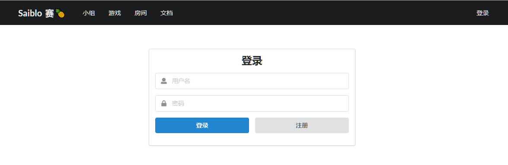
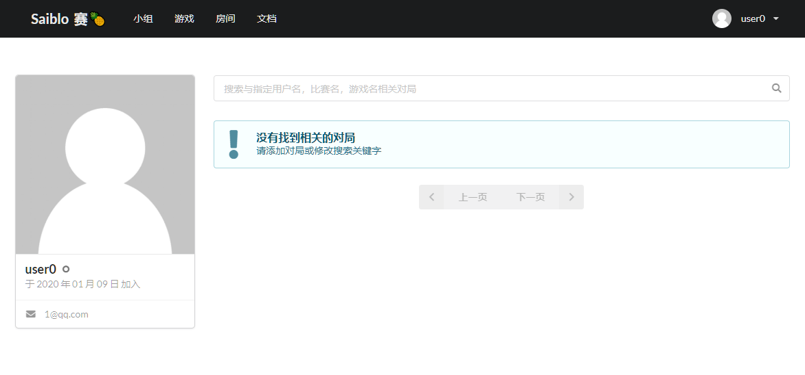

网站前端-用户管理系统
login.vue
| 参数 | 值 |
|---|---|
| 地址 | /login |
| 用途 | 用户登录界面 |
| 权限 | 游客 |
| 预览 |  |
| 属性 | 解释 |
|---|---|
| form.username | 表单中的用户名 |
| form.password | 表单中的密码 |
| isLoading | 加载中，在提交表单之后，等待服务器返回登录结果之间为True |
| isOK | 服务器返回登录成功后，isOK为True |
| err_code | 服务器返回登录失败后，err_code设为response的错误码 |
| 函数 | 参数 | 返回值 | 解释 |
|---|---|---|---|
| login | null | null | 点击登录按钮后会调用此函数，首先进行Vuelidate验证是否输入了用户名和密码，然后将表单发送给服务器等待服务器确认登录成功与否，如果登录成功，跳转到网站首页（使用nuxt.js 的loginWith实现，默认行为） |
register.vue
| 参数 | 值 |
|---|---|
| 地址 | /register |
| 用途 | 用户注册界面 |
| 权限 | 游客 |
| 预览 |  |
| 属性 | 解释 |
|---|---|
| form.username | 表单中的用户名 |
| form.password | 表单中的密码 |
| form.email | 表单中的邮箱 |
| form.confirm_password | 表单中的确认密码 |
| isLoading | 加载中，在提交表单之后，等待服务器返回登录结果之间为True |
| isOK | 服务器返回登录成功后，isOK为True |
| err_code | 服务器返回登录失败后，err_code设为response的错误码 |
| 函数 | 参数 | 返回值 | 解释 |
|---|---|---|---|
| register | null | null | 点击注册按钮后会调用此函数，首先进行Vuelidate验证用户名，密码，邮箱格式是否正确，确认密码是否与密码一致，然后将表单发送给服务器等待服务器确认注册成功与否，如果注册成功，显示1s的注册成功消息栏并在1s后跳转到登录界面 |
forget_password.vue
| 参数 | 值 |
|---|---|
| 地址 | /forget_password |
| 用途 | 用户忘记密码后进行邮箱验证 |
| 权限 | 游客 |
| 预览 |  |
TODO：邮箱服务器没搞定，zah说上线前再修
reset_password.vue
| 参数 | 值 |
|---|---|
| 地址 | /reset_password |
| 用途 | 用户忘记密码后进行邮箱验证，验证成功后重置密码 |
| 权限 | 登录用户 |
| 预览 |  |
TODO：邮箱服务器没搞定，zah说上线前再修
profile.vue
| 参数 | 值 |
|---|---|
| 地址 | /profile |
| 用途 | 个人资料界面 |
| 权限 | 登录用户 |
| 预览 |  |
| 属性 | 解释 |
|---|---|
| cardOneActive | 用于实现鼠标移到头像上显示修改资料的效果（早期Semantic UI Vue使用不熟练的结果） |
| 函数 | 参数 | 返回值 | 解释 |
|---|---|---|---|
edit_profile.vue
| 参数 | 值 |
|---|---|
| 地址 | /edit_profile |
| 用途 | 修改相关的个人资料 |
| 权限 | 登录用户 |
| 预览 |  |
| 属性 | 解释 |
|---|---|
| profile_form.username | 表格1中的用户名，使用nuxt.js提供的方式获取值 |
| profile_form.email | 表格1中的邮箱，使用nuxt.js提供的方式获取值 |
| profile_form.name | 表格1中的姓名，使用nuxt.js提供的方式获取值 |
| profile_form.sex | 表格1中的性别，使用nuxt.js提供的方式获取值 |
| profile_form.school | 表格1中的学校，使用nuxt.js提供的方式获取值 |
| profile_form.department | 表格1中的院系，使用nuxt.js提供的方式获取值 |
| profile_form.biography | 表格1中的自我介绍，使用nuxt.js提供的方式获取值 |
| profile_form.isLoading | 表格1对应的是否加载中的状态变量 |
| profile_form.isOK | 表格1修改成功后，设为True |
| profile_form.err_code | 表格1提交失败后，err_code设为响应的status_code |
| password_form.username | 表格2中的用户名，使用nuxt.js提供的方式获取值 |
| password_form.old_password | 表格2中的密码，表示原始密码 |
| password_form.password | 表格2中的新密码 |
| password_form.confirm_password | 表格2中的确认密码 |
| password_form.isLoading | 表格2对应的是否加载中的状态变量 |
| password_form.isOK | 表格2提交成功后，设为True |
| password_form.err_code | 表格2提交失败后，err_code设为响应的status_code |
| sex_options | Vue用于实现下拉菜单，包含下拉菜单中每项的icon，文字描述和值 |
| 函数 | 参数 | 返回值 | 解释 |
|---|---|---|---|
| edit_profile | null | null | 点击保存资料按钮后会调用此函数，首先进行Vuelidate验证所填表项格式是否合法，然后将表单发送给服务器等待服务器确认修改成功与否，如果保存成功，显示1s的注册成功消息栏 |
| change_password | null | null | 点击确认修改按钮后会调用此函数，首先进行Vuelidate验证所填表项格式是否合法，然后将表单发送给服务器等待服务器确认修改成功与否，如果修改成功，显示1s的注册成功消息栏 |
user/_id.vue
| 参数 | 值 |
|---|---|
| 地址 | /user/<username> |
| 用途 | 查看username用户的相关资料 |
| 权限 | 登录用户 |
| 预览 |  |
| 属性 | 解释 |
|---|---|
| user | nuxt.js 中使用asyncData向服务器获取值，表示用户名为username的用户的信息，包括加入时间，注册邮箱，性别等等 |
| 函数 | 参数 | 返回值 | 解释 |
|---|---|---|---|
| 依赖部件 | 传入部件参数 |
|---|---|
| match-list | username |